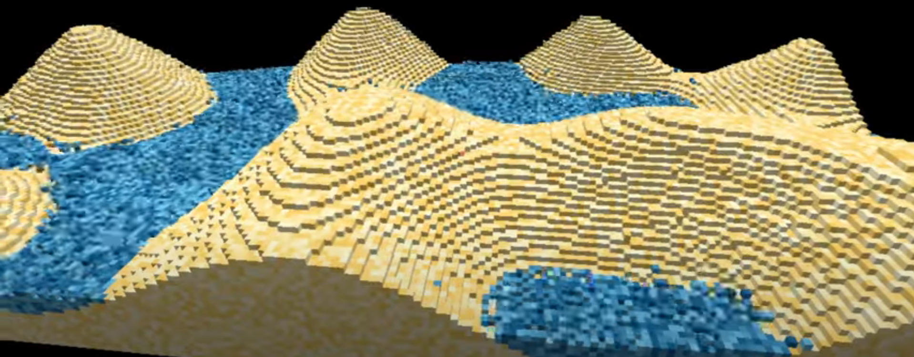

Our project idea is to simulate falling 3D sand as well as other materials, but with a focus on cellular automaton particle simulation rather than realistic physics. We also want to add interactions between the materials, such as water blocks putting out fire. Ultimately, we want to present a material simulator where users can select and place different blocks of materials and observe how they fall/interact.
Falling-sand type simulation in 3D.
We are trying to solve the problem of approximately simulating material movement and interactions. This is important because many real world simulators rely heavily on movement/interaction logic and creating an approximate version gives us some experience in building these system models.
We plan to solve this problem by using cellular automaton logic to determine particle movement. This means we will use a 3D cellular grid to represent our "world" and determine a falling particle's next position by looking at the 9 cells directly beneath and diagonal to it. Initially our world is purely discrete... however afterwards we will add randomness by randomising each block's falling position. If 2 materials with a special interaction "touch", i.e. are in adjacent cells, we will perform an interaction. This can look like merging the 2 touching cells into a single cell (i.e. water + fire = smoke) or converting both cells into a completely new material (i.e. water + sand = 2 wet sand).
This problem is challenging in that achieving high performance on large worlds is tough. In conventional 2D worlds you only need to render the splice of world that the user sees. In 3D, the amount of world the user sees is much larger, so simulation must be able to withstand higher loads and simulating every pixel on screen won't do. We will solve this issue, by marking the "interesting" areas of the world which need to be updated, and not simulating idle parts of the world.
Our main goal is to be able to implement a novel 3D sand falling simulation not with physics but with cellular automation. This simulation will include different particles (i.e. sand, water, fire) that will have different behaviors based on the other particles it interacts with.
Milestone 1: Demo where you see several sand blocks falling from a deterministic spawning point. The sand should fall and settle on the ground with collisions on other sand blocks.
Our baseline plan for the final submission is a window where users can view a world space and place materials by clicking with their cursor. Materials created will fall from their spawned location and settle onto the ground, potentially colliding with other particles beneath it. Users will also be able to change the type of material they create. When different materials touch, they will simulate some kind of reaction that users can observe. This is a list of materials and interactions we want in our baseline plan:
|

|
Create the initial viewport window which can render cubes from the world grid.
Simulate sand falling from a deterministic starting point. Include collision logic on other blocks of sand.
Add the ability to add materials into the world from a specific starting point by clicking. Make simulation faster by simulating only parts of the world which need to be simulated from the viewpoint of the user.
Add more materials and interactions.